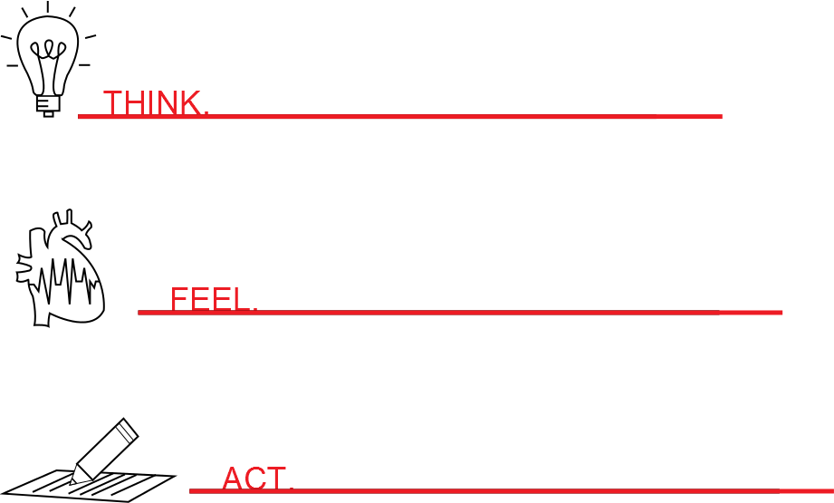

<div class="container">
    <div class="main-content">
        
        <div class="constrained">
            <h1>About Us</h1>
            
            <h2>About TEDx, x = independently organized event</h2>

            <p>In the spirit of ideas worth spreading, TEDx is a program of local, self-organized events that bring people together to share a TED-like experience. At a TEDx event, TEDTalks video and live speakers combine to spark deep discussion and connection in a small group. These local, self-organized events are branded TEDx, where x = independently organized TED event. The TED Conference provides general guidance for the TEDx program, but individual TEDx events are self-organized. (Subject to certain rules and regulations.)</p>

            <h2>About TED</h2>

            <p>TED is a nonprofit organization devoted to Ideas Worth Spreading. Started as a conference in California 26 years ago, TED has grown to support those world-changing ideas with many initiatives.</p>

            <p>At a TED conference, the world's leading thinkers and doers are asked to give the talk of their lives in 18 minutes or less. TED speakers have included Roger Ebert, Sheryl Sandberg, Bill Gates, Elizabeth Gilbert, Benoit Mandelbrot, Philippe Starck, Ngozi Okonjo-Iweala, Brian Greene, Isabel Allende and former UK Prime Minister Gordon Brown. Three major TED events are held each year: The TED Conference takes place every spring in Vancouver, Canada, simultaneous with TEDActive, in Whistler, BC; and the TEDGlobal Conference takes place each summer in Edinburgh, Scotland.</p>

            <p>On TED.com, talks from TED conferences are shared with the world for free as TED Talks videos. A new TED Talk is posted every weekday. Through the Open Translation Project, TED Talks are subtitled by volunteers worldwide into more than 90 languages. Through our distribution networks, TED Talks are shared on TV, radio, Netflix and many websites.</p>

            <p>The TEDx initiative grants free licenses to people around the world to organize TED-style events in their communities with TED Talks and live speakers. More than 5,000 TEDx events have been held, and selected talks from these events are also turned into TED Talks videos.</p>

            <p>The annual TED Prize grants $1 million to an exceptional individual with a wish to change the world. The TED Fellows program helps world-changing innovators from around the globe to become part of the TED community and, with its help, amplify the impact of their remarkable projects and activities. TED-Ed creates short video lessons by pairing master teachers with animators, for use in classroom instruction or independent learning. </p>

            <p>For information about TED's upcoming conferences, visit http://www.ted.com/registration</p>

            <p>Follow TED on Twitter at http://twitter.com/TEDTalks, or on Facebook at http://www.facebook.com/TED</p>
        </div>
        
        
        
    </div>
</div>